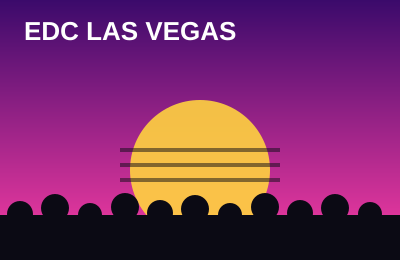
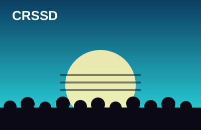
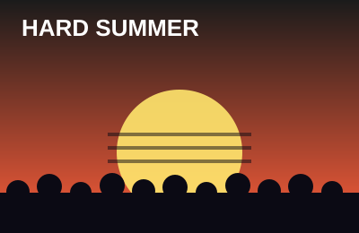
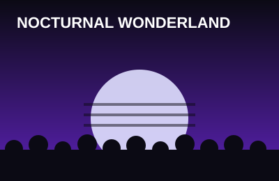

The four events that live rent-free in my head all year.

EDC Las Vegas
Where: Las Vegas Motor Speedway, NV ·
When: ·
Vibe: Massive
Electric Daisy Carnival is the big one. Three nights, sunset to sunrise, with
huge stages, art cars, and carnival rides spread across the speedway. The
main stage production is unreal, but some of my favorite moments have been at
the smaller stages at 4 AM.
Tip: Leave early for the shuttle line and plan a meetup spot with your group.

CRSSD Festival
Where: Waterfront Park, San Diego, CA ·
When: & ·
Vibe: Chill
CRSSD is the opposite of EDC in the best way. It's a daytime festival on the
San Diego bay with a lineup that leans into house and techno. The crowd is
relaxed, the sound is clean, and watching the sun set over the water during a
deep house set is hard to beat.
Tip: Bring a light jacket. It gets cold fast once the sun goes down by the water.

HARD Summer
Where: Los Angeles area, CA ·
When: ·
Vibe: High energy
HARD Summer mixes dance music with hip-hop, so the lineup is always all over
the place in a good way. It's close to home, which means no flights and no
hotel, and the energy in the crowd is always turned up.
Tip: It's August in LA. Hydrate before you even get there.

Nocturnal Wonderland
Where: Glen Helen, San Bernardino, CA ·
When: ·
Vibe: Classic SoCal rave
One of the longest-running festivals in Southern California. It has an
Alice in Wonderland theme, camping, and a crowd that has been going for years.
It feels more like a community than a show.
Tip: If you camp, bring a real sleeping pad. The ground is hard.